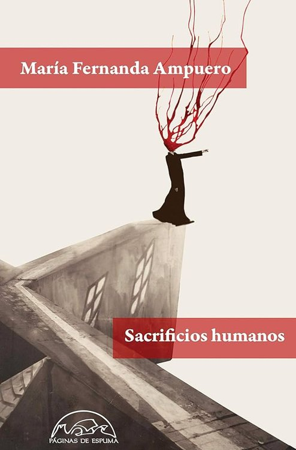

EL ESTANTE COMÚN
Detalles del libro
|
 |
Sacrificios humanospor María Fernanda Ampuero SINOPSISMaría Fernanda Ampuero se ha convertido en una de las voces indispensables de la literatura latinoamericana. Su libro Pelea de gallos (2018) ha sido en estos tres años todo un fenómeno que forma parte de una labor creativa, social y política de algunas escritoras a través de sus libros. Siete ediciones en español y varias traducciones a diferentes idiomas han convertido a este libro y a su autora en protagonista de esta nueva ola. Su segundo libro, Sacrificios humanos surge de este compromiso social y político en un contexto en el que todos podemos ser sacrificados, pero casi siempre son los mismos: migrantes, exiliados, mujeres... Una voz poderosa, radical, sangrante; unas historias que cuestionan nuestra mirada y nuestra conciencia para obligarnos a observar delante de nosotros la violencia, la muerte, el desarraigo, la manipulación... La fuerza de una escritora única que va a volver a llamar a nuestra puerta. |
CALIFICACIONES
–/10
PALABRAS CLAVE
Horror, Feminismo, Cuentos, Ficción